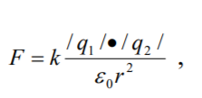
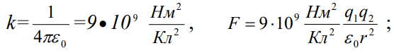
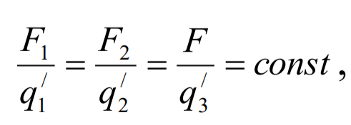
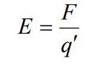
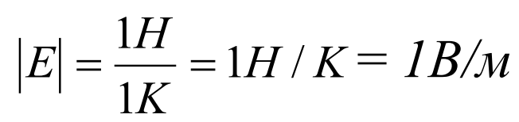

Страница І. Электростатика
1.1. Электрдің атомдық табиғаты. Электр заряды. Электр зарядының сақталу заңы
Біздің дәуірге дейінгі VІІ ғасырда янтарды жүнге үйкегенде жеңіл нәрселерді өзіне тартатындығы белгілі болған. Бұл құыбылысты грек ғалымы Фалес сипаттап жазды. Ұзақ уақыт осындай қасиет тек янтарьға ғана тән деп есептелініп келді, сондықтан да «электр» деген сөз алғаш рет пайда болды (грекше «электрон»- янтарь) . Бұл сөзді алғаш рет ғылымға 1600 жылы ағылшын ғалымы Гильберт енгізді. Ол электрлендіру құбылысы янтарьдан басқа да заттарда, мәселен шыныны жібекке, күкіртті қолмен және басқа заттарды үйкегенде байқалатындығын тағайындады.
Француз ғалымы Дюфе электрдің екі түрі бар екендігін, ал Американың қоғамдық қайраткері және ғалымы Франклин «оң» және «теріс» заряд түсініктерін енгізді. Күтпеген жерде шыныны теріге үйкегенде шыны оң заряд алады деген атқа ие болып қалды. 1729 ж. ағылшын Грей заттардың зарядттардың өткізгіштері мен өткізбейтіндеріне (изоляторларға) бөлінетіндігін ажыратты.
1897 ж ағылшын физигі Дж. Томсон электронды, ал 1919 ж ағылшын физигі Резерфорд протонды ашты. Электрон теріс зарядты, ал протон оң зарядты бөлшектер. Бейтарап күйдегі атом ядросы құрамына кіретін протонның саны қанша болса, ядроны айнала қозғалатын электронның саны да сонша болады. Электронның массасы m е = 9.1*10^-31 кг, ал заряды е=-1,6*10^-19 Кл. Протонның заряды шама жағынан электрон зарядына тең болғанымен, массасы электрон массасынан 1836 есе артық болады.
Фарадей зарядтың сақталу заңын ашты: оқшауланған жүйеде электр зарядтарының алгебралық қосындысы тұрақты болады, яғни
q1+q2+q3+...+qn=const (1)
1.2. Зарядтардың өзара әсері. Кулон Заңы
1785 жылы Ш. Кулон бұралмалы таразымен жасаған тәжірибеге байланысты мыныдай қорытындыға келді: өздерінің мӛлшері ара қашықтықпен салыстырғанда мүлдем аз екі зарядталған дене бір-бірін заряд шамаларының
.png)
көбейтіндісін тура, ал ара қашықтықтың квадратына кері пропорционал күшпен тартады.
Кулон біртекті зарядтар бірін-бірі тебеді, ал әртекті зарядтар біріне-бірі тартылатындығын анықтады. (нүктелік дене зарядының орнына нүктелік заряд алынады).

(2)
мұндағы: к – пропорционалдық коэффициент, оның мәні:

ε0 - электрлік тұрақты, ε0=8,85*10^-12 Ф/м.
ε – дененің диэлектрлік өтімділігі.
1.3. Электр өрісі
Тәжірибе зарядталған денелердің өзара әсерлесуі тек қана ауада ғана емес, вакуумда да, яғни ешқандай заты жоқ кеңістікте де бақыланатынын көрсетті. Оның үстіне бұл жағдайда әсерлесу әлдеқайда күштірек байқалады. Бұдан, егер зат электрленген денелердің әсерлесуіне ықпал жасағанның өзінде, оны тек әлсірететіндігі және осыған байланысты мүлде әсерді жеткізуші бола алмайтындығы келіп шығады.
Диалектикалық материализмнің, - әсер қашықтыққа ешқандай материалдық жеткізушісіз беріледі, - дегенді мойындамайтын категориясын және қатынастар теориясының кез келген әсерлесушілігінің шекті жылдамдығы вакуумдағы жарық жылдамдығынан аса алмайтындығы жӛніндегі дәлелдемесін пайдалана отырып, кез келген зарядталған бөлшек (немесе зарядталған дене) әсерлесуді жүзеге асырушы материяның белгілі бір түрімен қоршалған деген қорытындыға келуге болады. Материяның бұл түрін электромагниттік өріс деп атайды. Қазіргі теорияда электр зарядын электромагниттік өрістің көзі деп атайды. Бірімен-бірін салыстырағанда қозғалмайтын зарядталған бөлшектер немесе денелер жағдайындағы, олармен байланысты электромагниттік өрісті электростатикалық өріс дейді.
Электростатикалық өріс түріндегі материя қарапайым зат түрінде материядан едәуір өзгеше болады. Өріс үшін көптеген механикалық түсініктер мен заңдылықтар қолдануға келмейді. Мәселен, өріспен санақ жүйесін байланыстыруға болмайды; өрістің зарядталған дененің өріске әсері жайлы айтуға болғанымен, зарядталған дененің өріске әсері жайлы айтуға болмайды, яғни бұл жағдайда Ньютонның үшінші заңын пайдалануға келмейді.
Өрістерге суперпозиция принципі (өрістердің қабаттасуы) деп аталатын нәрсе қолданылмалы. Ол кеңістіктің қандай да болсын бір нүктесінде қанша 10 болса да өрістер мен заттар бола алмайтындығын, оның үстіне әрбір өріс зарядталған бөлшектерге немесе тартылушы массаларға, тіпті, кеңістіктің бұл аймағында басқа өрістер болмағандай-ақ әсерлесе алатындығын тұжырымдайды. Өріс үздіксіз және шексіз, дегенмен өріс энергиясы кванттар түрінде дискретті болып орналасқан.
1.4.Кернеулік
Зарядталған дененің өрісін зерттеу үшін өріске нүктелік заряд шартын қанағаттандыра алатын екінші зарядтар енгізіп оларға әсер етуші күштерді бақылап тексереді.
Өрістің әртүрлі нүктелеріне q сыншы зарядын орналастырсақ, оған осы нүктелерде шамасы да, бағыты да әрқалай күштер әсер етеді. Егер өрістің белгілі бір нүктесіне заряд шамалары әртүрлі q1 , q2, q3... т. с. с. сыншы зарядтарды орналастырып байқасақ, оларға сәйкес әсер ететін F1,F2,F3 ж.б. күштері де әртүрлі болады, ал әсер етуші күштің сыншы заряд шамасына қатнасы өзгермейді, яғни сыншы заряд неғұрлым үлкен болса өріс оған үлкен күшпен әсер етеді.

Бұл күштердің бағыттары, әрине бірдей болдаы.
Сонымен, өрісте әрбір нүктеде бағыты өрістің берілген нүктесіне келтірілген сыншы зарядқа әсер ететін күштің бағытымен сәйкес келетін векторлық шамамен сипаттауға болады.
Бұл векторлық шаманы электростатикалық өрістің кернеулігі деп атайды және мынандай формуламен өрнектейді:

(3)Егер q=1 болса, онда кернеулік Е сан жағынан Ғ күшке тең болдаы.
Электр өрісінің кернеулігі өрісті күштік жағынан сипаттайтын шама.
Электростатикалық өрістің қандай да бір нүктесіндегі кернеулгігі деп сол нүктеге қойылған бірлік оң зарядқа әсер ететін күшке сан жағынан алғанда тең және бағыты сол күштің бағытымен дәл келетін физикалық шаманы айтады.
СИ өлшем бірліктерінің жүйесінде электростатикалық өрістің кернеулік бірлігне шамасы 1 К болатын сыншы зарядқа 1 Н күш әсер еткендегі өріс нүктесінің кернеулігі алынады.
